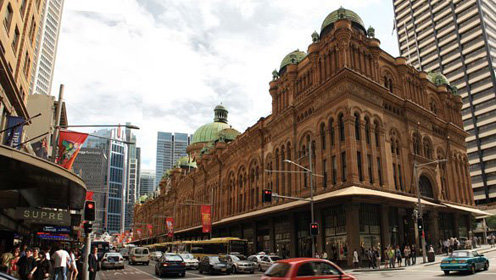

My Past Experiences With Computing
The Beginning
I was introduced to computers when I was pretty young. I was surrounded with technology, I had many gaming consoles, and two computers. I was a dumb lad, I just used the technology without giving any thoughts on how it worked. As I grew up, I began to learn about computers during my school life.
High School Experience
Throughout my school life, I was always interested in computing. In year 9 to 10, I chose 'Information communication technology (ICT)', where I learnt the basics of information technology and utilising software application such as Microsoft Access and Excel, as well as Adobe Photoshop and Illustrator. For my HSC (year 11 and 12), I chose two computing electives, they were 'Information Process and Technology (IPT)' and 'Software Design and Development (SDD)'. IPT was like ICT, learning some basics but also much more advanced termologies that is related even in my current course for university such as ethical and social issues, information technology and communication systems, and databases. In SDD, I learnt about programming and the users that are involved, as well as creating a game in 'Scratch' for my assignment. The subject also introduced me into the program 'Python' as well as some contents about Java. These two subjects helped me expand my knowledge about the IT world and how I wanted a career where I was involved with computers. Even though I chose topics that are related to computing, I forgot most of the contents after I finished the HSC. I still remember some information I learnt during school, but this is only when the topic is reintroduced to me.